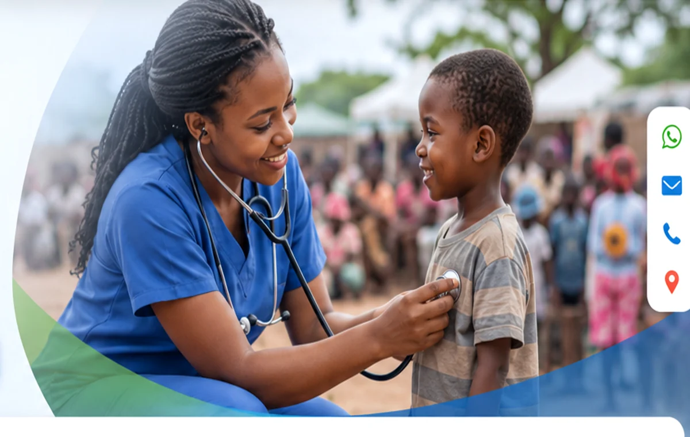
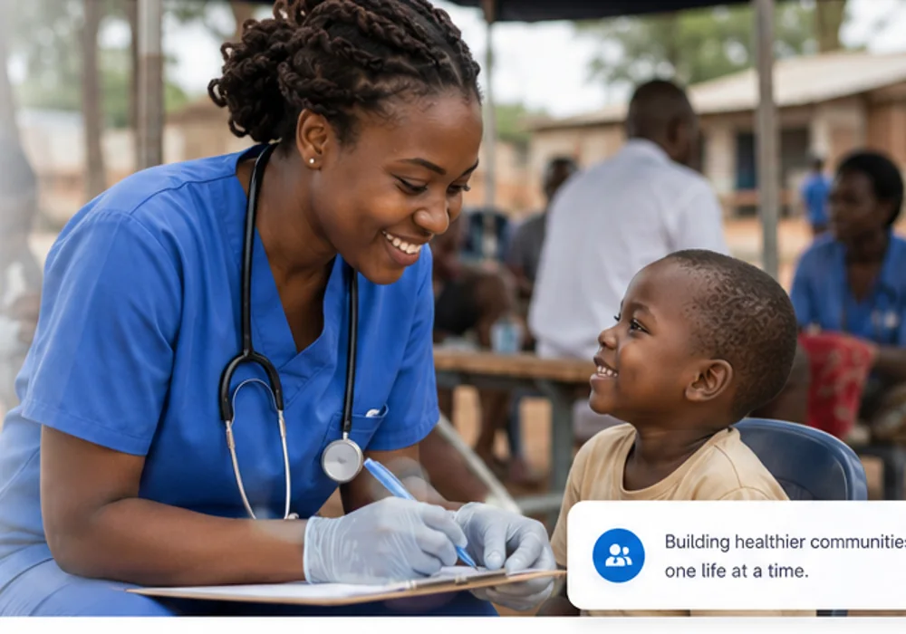

Medical Outreach
Screenings, consultations, referrals and basic health support delivered closer to communities.
Quality Care for All Foundation is committed to improving lives through accessible healthcare, health education, community outreach and humanitarian support.


About the Foundation
We are the nonprofit and humanitarian arm of CNU Medical Institute, created to improve access to essential care and strengthen community wellbeing.
✓ Community-centred healthcare support
✓ Preventive health education
✓ Volunteer-led service
✓ Sustainable institutional partnerships
What We Do
Practical programmes designed around real community needs.
Screenings, consultations, referrals and basic health support delivered closer to communities.
Preventive-health information for families, schools and community groups.
Awareness, psychosocial support and referral pathways for individuals and families.
Targeted assistance for vulnerable people and underserved populations.
Support
Your donation can support outreach logistics, essential supplies and community health education.
Donate SecurelyVolunteer
Join our growing network of healthcare professionals and community volunteers.
Register now →Partnership
Work with us through funding, technical support, healthcare services or institutional collaboration.
View our partners →Need to reach us?